Behind the scenes at the I Tatti Digital Humanities Lab
digiTattithe Harvard digital humanities lab for early modern studies
Lukas KlicHead of Digital Humanities Research
Remo GrilloDigital Humanities Research Software Engineer
Gianmarco SpinaciDigital Humanities Research Software Engineer
Kansas City · Nelson-Atkins Museum of ArtWednesday 28 October 2026
Luca Signorelli and assistant, The Flight into Egypt; Christ Among the Doctors, c. 1520. The Nelson-Atkins Museum of Art. Photograph: Biblioteca Berenson, Fototeca, Villa I Tatti.
introductionwho we are
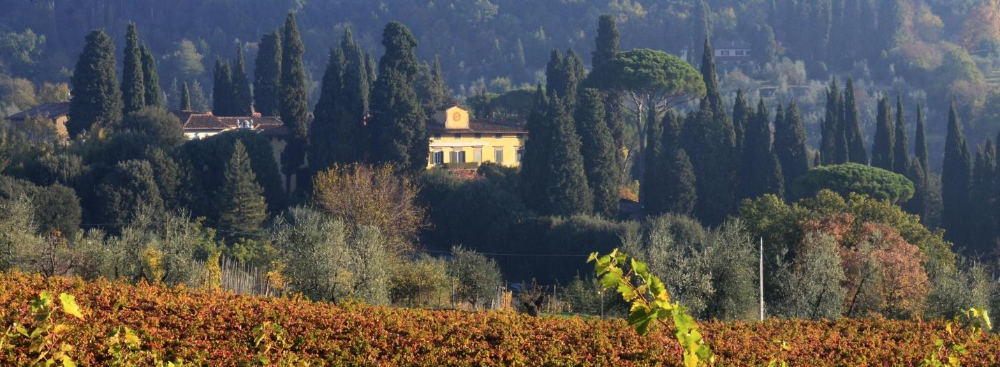
Villa I Tatti, Florence: Bernard and Mary Berenson's home, left to Harvard in 1959; the Center opened in 1961.
I Tatti, and its digital lab.
I Tatti is Harvard's center for Italian Renaissance studies, in the Berensons' villa above Florence: a community of scholars from around the world, with a library, an art collection, archives, and Berenson's photo archive.
digiTatti, its Digital Humanities Lab, is a space to exchange ideas and methods that leverage technology to provide greater insight into the history of culture: opening I Tatti's collections, and connecting them to the questions scholars ask.
introductionwhat we do
What the lab does, from the scanner to the scholar.
01
Digitize
Low-cost mass digitization, built for volume. Our software guides an operator through the archive box by box, folder by folder: place the item, scan, next.
photographs · documents · 35 mm slides
02
Read
AI transcribes each item, writes a caption, assigns categories, and produces structured data.
transcription · captions · categories
03
Enrich
Names and places standardized; a museum placed on the map; an artist matched to reference vocabularies. Ambiguous links are checked by people.
linked to other institutions
04
Publish
Platforms anyone can explore, where every statement leads back to its source.
open to everyone
05
Reuse
Tools for our catalogers and researchers to augment and repurpose the data, for their own research questions.
for catalogers and researchers
with and for scholars
Research support
Scholars bring their own sources into our tools, to gather them in one place and study them as a whole.
Fellows
Digital Humanities fellows come with their projects; the lab is where we exchange ideas and methods, and learn from each other.
Collaborations
Projects of outside researchers within I Tatti's scope: the Italian Renaissance and related fields.
introductionwhat we do · research
The computer science side of our work.
Many of the technical problems we work on apply well beyond the humanities, and the complexity and uncertainty of historical data can make them harder to solve.
our earlier workwhat we are building now
01
Semantic web & linked data
Describing connections precisely
Rich semantic structures describe relationships between people, places, events and objects; linked data connects them to shared authorities, to tell artists, places, repositories and artworks apart.
Getty ULANGetty AATWikidataVIAF
02
Visual similarity
Finding a work by how it looks
Find similar artworks and recognize the same work across different collections, so we can connect what researchers in different places have said about it.
03
Benchmarking AI
Testing before trusting
Measuring what AI tools can do and where they fall short: early modern and contemporary handwriting, Renaissance music notation, image captioning.
04
Plain-language questions
Asking the semantic web in plain words
Searching linked data takes a specialist query language. We build systems that use AI to translate a research question, asked in plain words, into that language, and bring the answer back.
best paper · ISWC 2026
05
Questions of images
Asking questions of image collections
Retrieve images by what they actually show rather than by their data, and answer art-historical questions across large image collections.
introductionthe challenge
One of our challenges: much of the humanities' historical data is hard for digital research to reach.
Before we can map, search or analyze anything, we have to get to it, and in a form a computer can read.
In books
Catalogues, lists and inventories, printed as prose, often still in copyright: rich data that no computer can read as it stands.
In archives
Photographs, letters and diaries: often not digitized, or scanned but never transcribed, so they cannot be searched.
Behind paywalls
The secondary literature that explains these sources is licensed for reading, rarely for analysis at scale.
In footnotes
Years of research end in a book; the evidence is cited at the bottom of the page, not available as data.
In closed databases
Scholars' personal archives and project databases, in closed formats, offline once the grant or the career ends.
Most scholars in the humanities work alone. One of our goals is to open up access to these sources, connect them, and let people build on each other's work.
introductiontoday
Today, in two parts.
I
Research: mapping places through time
How the lab came to mapping, the platform we built so scholars can rebuild the history of places together, and two projects that use it.
How we digitize collections and use artificial intelligence to read them, above all the world of Bernard and Mary Berenson. Shown live.
Berenson's photo archivehis ListsMary's diariesZanardiand more
?
Your questions
Including, if you like, how any of it works.
part I · researchhow we got here
It began with Florence, and with scholars who wanted maps.
01A historical GIS for Florence
We set out to build a historical geographic information system for the city, and many researchers wanted to contribute to it.
02Fellows asked for the same thing
When we began offering Digital Humanities fellowships, in 2016, a large share of the proposals were about mapping.
03But existing systems could not do it
None let many scholars work on the same map, follow it through time, and keep every building linked to its sources.
Mapping SculptureMellon fellow · 2016–17
Mapping the Medieval WomanKress fellow · 2016–17
Building Baroque RomeKress fellow · 2017–18
Archipelago: the islands of the Venetian lagoonresearch associate · 2019–21
Towering over Medieval Rome, in 3Dfellow · 2020–21
part Iresearch
I
Research: mapping places through time
What we wanted: a historical Google Maps with a time slider. Zoom into a city, see who owned each building and how it was used, and build the views your own research question needs.
Metapolis, the platformVeNiss: the islands of VeniceFlorentia Illustrata: Florence, 1835
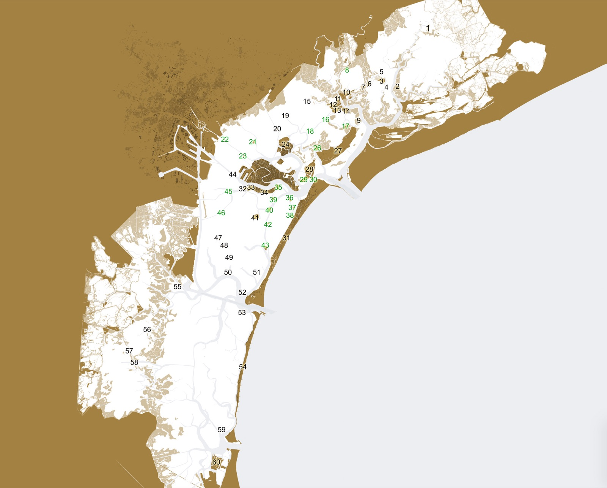
The islands of the Venetian lagoon, numbered: a VeNiss map.
part I · researchthe map in a book
In a book, the map and its sources live apart.
01Maps are ready for computers
Among historical data, maps belong to a small subset that is computationally actionable: a place with coordinates, and a date.
02Every point needs a footnote
The line of a journey is drawn on the map; the evidence for each point is at the bottom of the page, or in another book.
03The map is one author's story
It shows what that scholar wanted to convey. The data behind it cannot be seen another way.
04On our maps, each point is one click from its source
And the same data can be looked at again, by someone else, with a different question.
part I · researchsame sources, many histories
The same sources, many histories.
Many scholars work on the same documents and the same places, each from their own perspective. The sources one historian gathers are often exactly what another one needs.
So we wanted to give scholars not only each other's narratives, but the data behind them: to look at it differently, remix it, and build new narratives of their own.
documents → data → a story (kinds of document illustrative)
1500 · the church is beguna document
1504 · a printed view shows it finisheda view of the lagoon
1608 · the buildings are changeda document
1820 · the church is demolisheda document
Today · surveyed againa laser survey of what remains
part I · researchthe challenge
Three phases of research, and the pieces never meet.
phase 1
Collect the sources
a database of documents, people, events
On one computer, in a closed format. The documents cannot be shown next to the buildings they describe.
phase 2
Draw the buildings
shapes on a map, phase by phase
No sources behind the shapes: who built it, when, and how we know.
phase 3
Write the story
a book, with footnotes
Read once, front to back. Nobody can search it, ask it a new question, or add to it.
A shared workspace. One map that moves through time, where every building is one click from its sources and every contribution is credited to the person who made it.
This is the challenge Metapolis addresses. It grew out of exactly this situation, in the lab's Venice project, Archipelago: in 2020 the sources lived in one database and the maps in another.
part I · researchmetapolis
Metapolis · the platform
A map that moves through time, with the evidence attached.
Historical maps over today's, a timeline you can drag, and every building one click from the documents, people and events behind it.
→For scholars
One place to work together, each in their own field, on the same city.
→For everyone else
A place to explore, in a browser, with nothing to install.
→Open
Free, open-source software, and data others can reuse.
veniss.net · a story on the map
Metapolis at work on VeNiss, the islands of Venice: a story told as a sequence of map views.
part I · researchhow it works
How a building gets onto the map.
1
Georeference a historical map
The Austrian land survey of Venice, 1838–41, is laid exactly over a modern base map.
2
Retrace the buildings
In a GIS, each building on the historical map becomes a polygon, with the years it stood.
3
Describe it
Connect documents, owners, builders and events, each with its own source.
4
Connect it
Cite the source, link to libraries, archives and museums, and it is on the platform.
The moment it is saved, it is on the public map, credited to whoever entered it. No programmers in the loop.
part I · researchthe map
A familiar map, with time and evidence built in.
veniss.net ·
part I · researcha living resource
From a printed book to a resource that keeps growing.
Metapolis is where the research is done and where it is published: the same data, with nothing in between. A correction made this morning is online this afternoon.
01It grows
New sources, new buildings, new scholars, year after year.
02It is credited
Every entry carries the name of the person who made it.
03It can be cited
Stories on the map are publications in their own right.
04It lasts
Open data that will outlive any one piece of software.
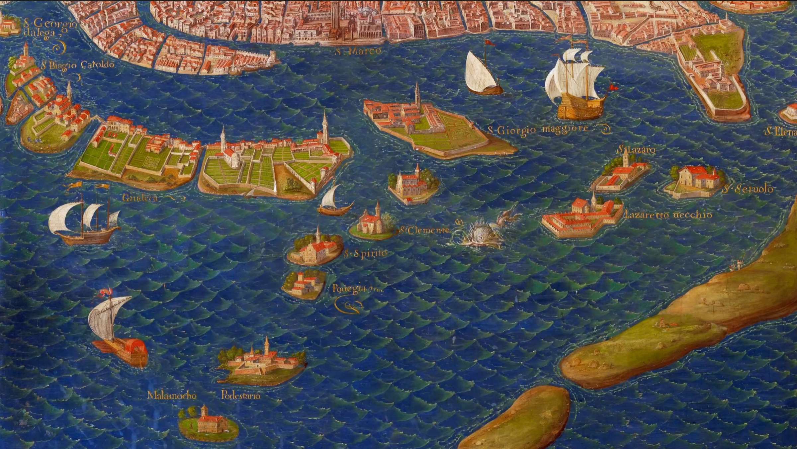
project · Venice
VeNiss: Venice as an archipelago.
“It is impossible to understand how the Republic of Venice worked without the lagoon as an archipelago.” Islands for food, defence, faith, quarantine and ceremony, from the 16th century to today.
60+islands
5centuries
3research teams
Padua · Florence · I Tatti
2023–27European Research Council project
part I · VeNissthen and now
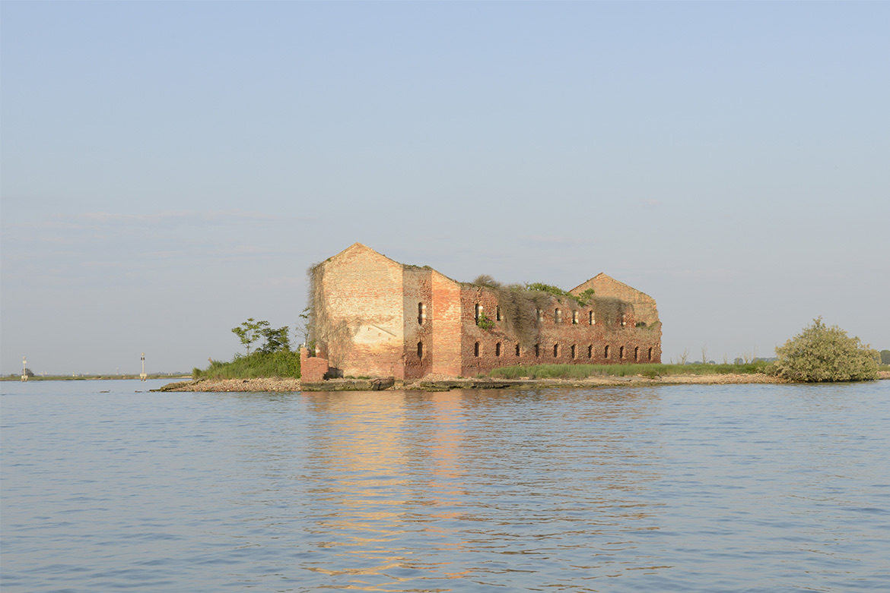
thentoday
What happened to the islands?
After the fall of the Republic in 1797, many islands were razed, sold or abandoned. Some now “lie abandoned at the mercy of the high and low tides”; San Clemente has been a luxury hotel since 2003.
Drag across the picture. On the platform, the same gestures work on the map, over historical maps.
Historical views and photographs: VeNiss project.
part I · VeNissgrowth
From one researcher's database to a shared resource.
documents
events
people
islands & buildings
VeNiss, October 2026Archipelago, 2020
7,551entries, and growing
plus 2,203 images and 27 historical maps, entered by three teams.
veniss.net database overview, October 2026, including records in progress; Archipelago database, March 2020.
part I · VeNissa story on the map
How isolation made the islands the place for quarantine.
veniss.net · Lazzaretto Vecchio, in 3Din progress
The Lazzaretto Vecchio: buildings surveyed by our partners, rebuilt in 3D, following the timeline.
1423A hospital for the plague-stricken
The Senate founds the Lazzaretto Vecchio.
1468A second island, to prevent contagion
The Lazzaretto Nuovo: quarantine before disease.
1575Nine islands become hospitals
In the great plague of 1575–77, a cordon around the city.
→Every sentence, one click from its source
The story is written on the map, by the historians.
part I · researchproject · Florence
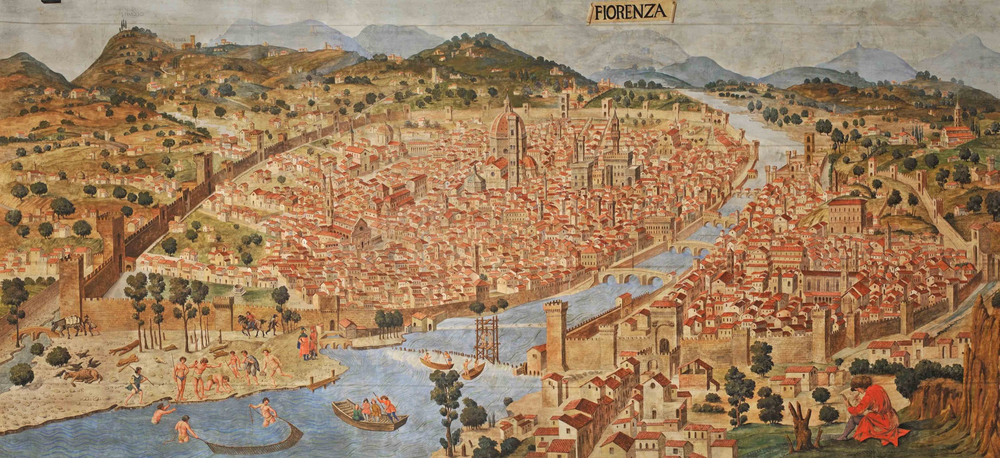
Florence in a painted view. Florentia Illustrata maps the city from its 1835 land survey.
Florentia Illustrata
Florence, parcel by parcel, in 1835.
The Catasto Generale Toscano is the first precise survey of the whole city: every plot of land, its owners and what stood on it. We start there because it is so precise; then we move backwards in time, mapping older plans that cover parts of the city.
17,681parcels
each linked to its owners and its use
A partnership with scholars of Renaissance Florence, founded in 2018. Data: Belli, Lucchesi, Raggi (Firenze University Press, 2022).
part I · Florentia Illustrataa new question
How many women owned property in 1835 Florence? The survey never says.
01The survey has no column for gender
Owners are listed by name, father's name, title.
02Follow the clues
“Moglie di”, wife of; first names that are always female; “widow”, “nun”.
03A new map
Women alone, shared ownership, men alone, institutions: one question, one layer.
Among parcels held by individuals, women owned about one in ten, in every category; in numbers, mostly homes.
part IIarchives to data
II
From archives to data
How we digitize a whole archive, and how artificial intelligence reads what is written on it, and describes what it shows.
digitizing the photo archivejoining up forty years of cataloguingreading the backs, describing the imageshow we check
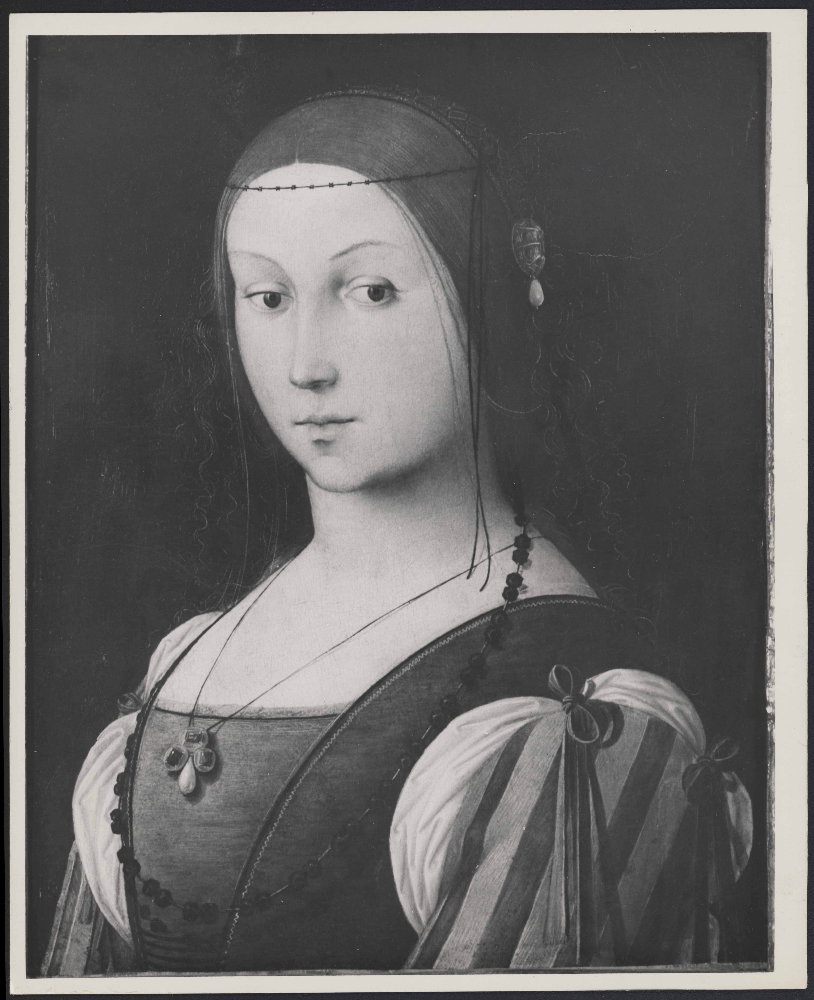
From Berenson’s photo archive: Lorenzo Costa, portrait of a lady (Currier Gallery of Art, Manchester, N.H.).
part II · archives to datadigitization
A digital twin of the archive, open to the whole world.
The whole archive, as Berenson arranged it
Every photograph, front and back, in its exact place: box, folder, and order within the folder.
From anywhere
For most scholars Florence is the other side of the world. Online, the whole collection is a click away.
Evidence found nowhere else
Attributions, owners, sales, condition, and photographs of works since lost or damaged: knowledge that adds to what museums and scholars know about these works.
Digiteca · the scanning station, time-lapse
The scanning station at I Tatti: off-the-shelf scanners, and our own software, which reads a barcode on the back and files both sides in the right folder.
part II · archives to datadigitization
One operator, four years, the whole archive.
€85,928to scan the entire archive
about 230,000 photographs, front and back
458,988scans
3,906 hours of scanning
€0.19per scan
31 seconds each, everything included
historical photographs scanned per year
20092,840
20109,687
20119,742
20124,671
…
202163,129
202273,299
202364,860
202447,595*
earlier digitizationour scanning station* to October 2024
part II · archives to datatranscription
Reading the backs of photographs, then checking every line.
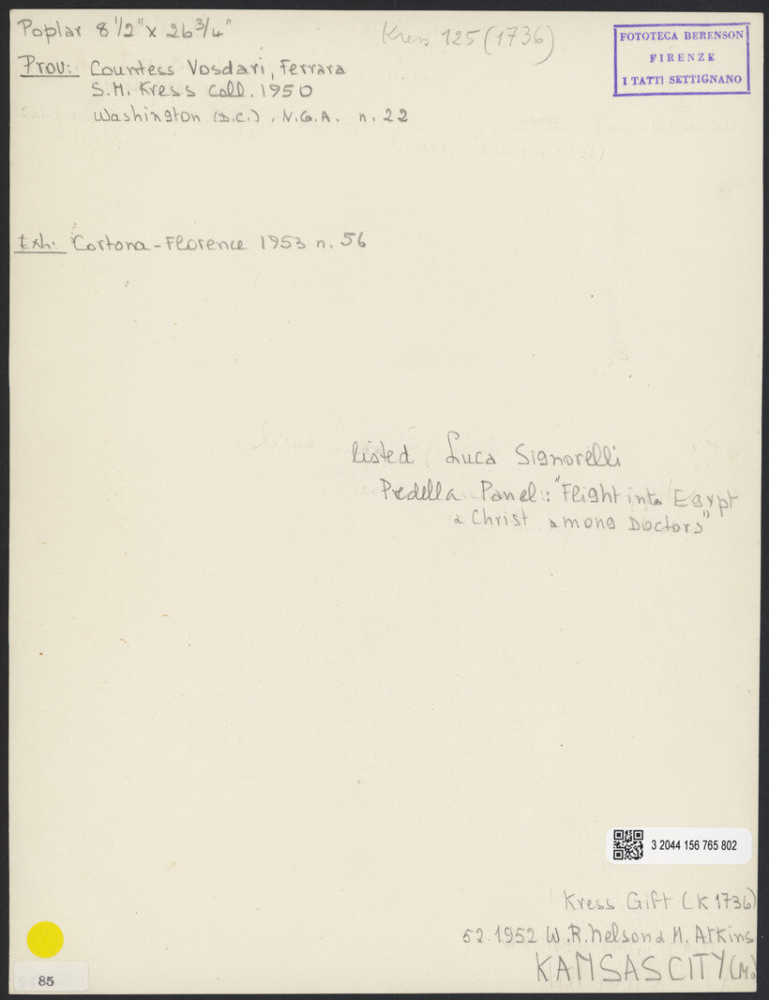
Verso Signorelli, Flight into Egypt; Christ among the Doctors.
record · read from the photograph32044156765802
artist
Luca Signorelli
title
Flight into Egypt & Christ among Doctors
type
panel painting, poplar, 21.6 × 67.9 cm
owners
Countess Vosdari, Ferrara → S.H. Kress Coll. 1950 → National Gallery, Washington
shown
Cortona – Florence 1953, no. 56
today
Nelson-Atkins Museum of Art, Kansas City
Each record: artist, title, place, date, materials, inscriptions, stamps, owners and exhibitions, kept apart from the record of the photograph itself.
June 2025 · first batch112,395 photographs, front and back
Read in about nine hours, for under a cent each: some $900 for the first 100,000. 99.8% processed without error.
nowRedone with a newer model
Claude Opus 5.5: so far we have not found a single mistake. A second leading model differs only in how it structures the data.
FebruaryPublic
Once our catalogers finish grouping photographs of the same artwork into one record, the collection opens to everyone.
part II · archives to datahow we check
How we use AI, and how we check it.
01
The source decides
Every statement links to the page, letter or photograph it came from. Readers never have to take our word for it.
02
We measure first
Before a large run, we test several AI systems against answers checked by hand, and publish the results.
03
Uncertainty stays visible
Illegible words are flagged; approximate dates stay approximate; conflicting sources are both kept.
04
People decide
A person reviews every edge case that may need more complex reasoning.
05
We preserve
Websites disappear: for one 2017 project, 97% of our links were dead five years later. We now archive every page we cite, more than 21,000 so far.
part II · archives to dataas of October 2026
What artificial intelligence now does well for us.
Reading handwriting
Diaries, letters, and the notes on the backs of photographs.
Turning books into data
A catalogue's pages become artists, works, places and dates.
Finding places
“The main museum in Bologna” becomes a point on a map.
Analyzing images
Finding matching images, and writing captions that only describe what is seen.
Researching the web
Checking a name, a date or a museum record across many sources.
part IIIdata to discovery
III
From data to discovery
The platforms we build on that data, for scholars and for everyone. Shown live.
Fototeca Berensonthe Bruno Zanardi archiveItalian Pictures of the RenaissanceThe Geography of Taste: Mary's diariesthree travel books, mappedFloreat MusicaAfrica and the Renaissance: Art in Ivory
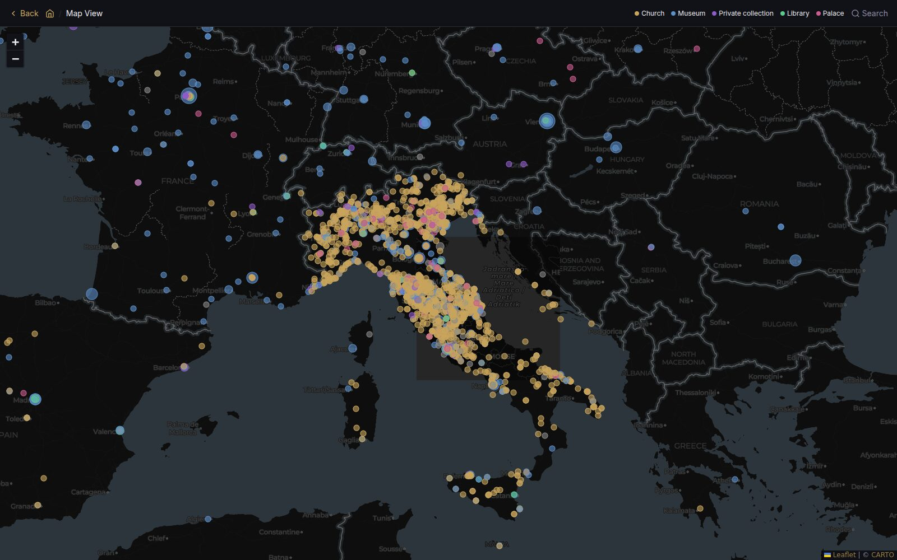
Where the works in Berenson's photographs are today: the Fototeca explorer.
part III · data to discoveryfototeca berenson
Fototeca Berenson · preview
Berenson's photo archive, walked through as he arranged it.
Box by box and folder by folder, front and back side by side, or on a world map of where the works are now.
Recto Luca Signorelli and assistant, The Flight into Egypt; Christ Among the Doctors, c. 1520, poplar, 21.6 × 67.9 cm.
Verso the back of the same print: the archive's stamp, and notes in pencil.
01A photograph in Berenson's archive
One of hundreds of thousands he collected to study Italian painting.
02On the back, in pencil: “Kansas City (Mo.)”
“Kress Gift (K 1736) · 52.1952 · W. R. Nelson … Kansas City”: 52.1952 is the number Berenson cites for the panel in Italian Pictures of the Renaissance (1968).
03A journey, written in the record
A countess's collection in Ferrara, the Kress Collection (1950), the National Gallery in Washington, and then Kansas City.
04One object, many threads
A painting, a photograph, a book, a journey. Connecting them is our work.
part III · data to discoveryyour museum in our archive
The Nelson-Atkins, seen from I Tatti.
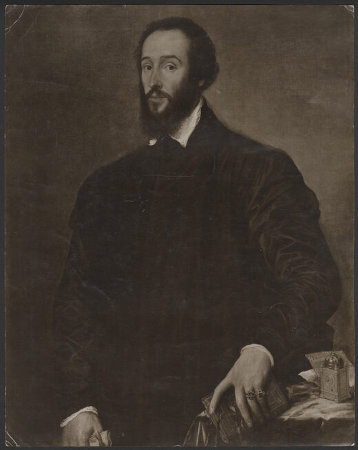
Titian
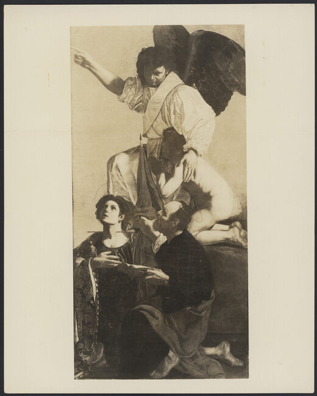
Caravaggio
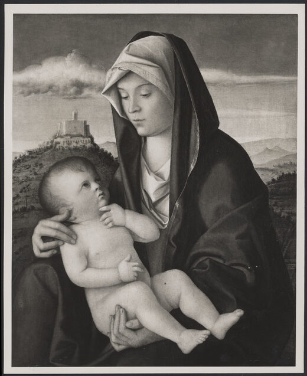
Giovanni Bellini
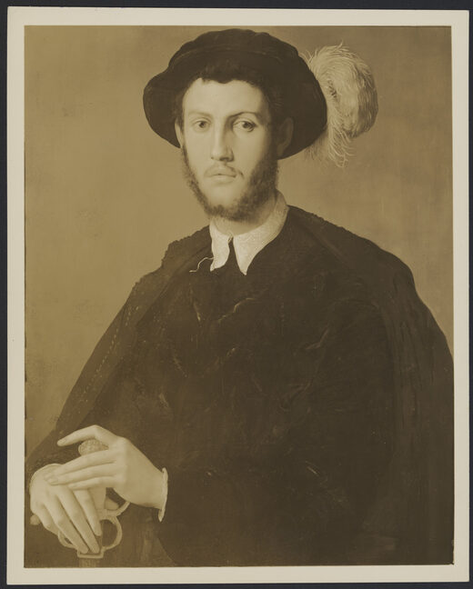
Bronzino
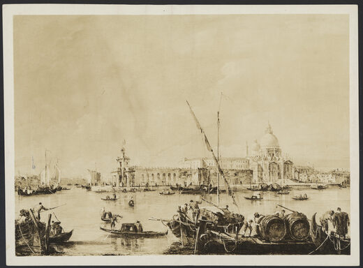
Francesco Guardi
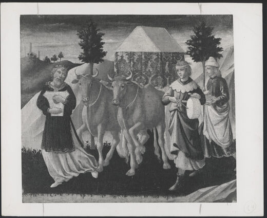
Pesellino
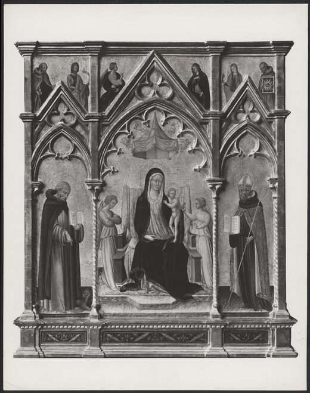
Giovanni di Paolo
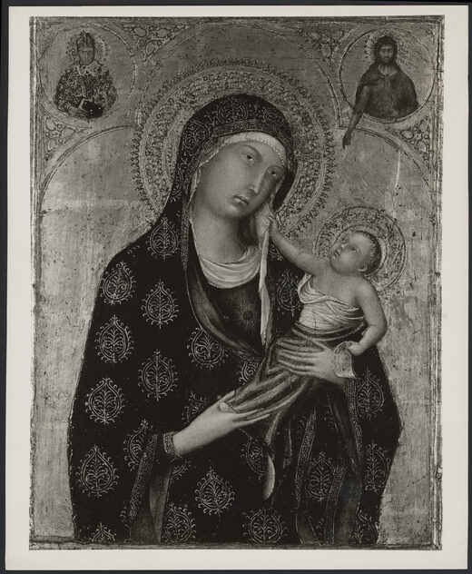
Simone Martini
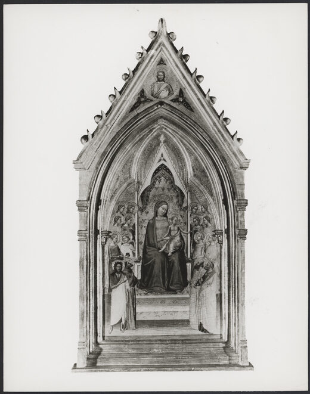
Workshop of Daddi
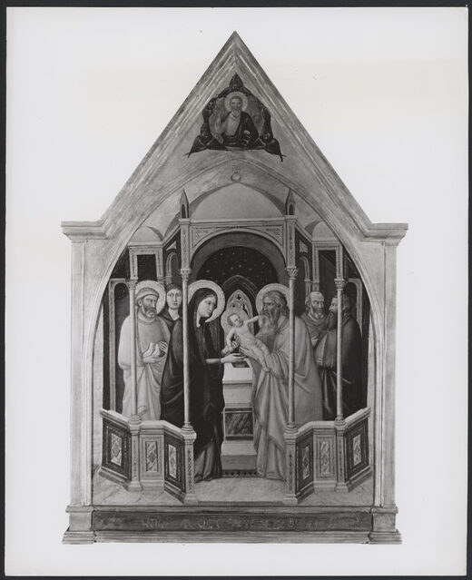
Jacopo del Casentino
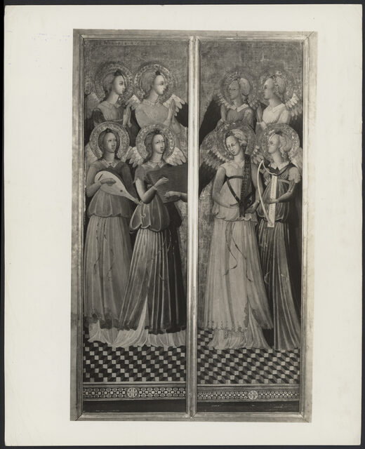
Bargello Tondo Master
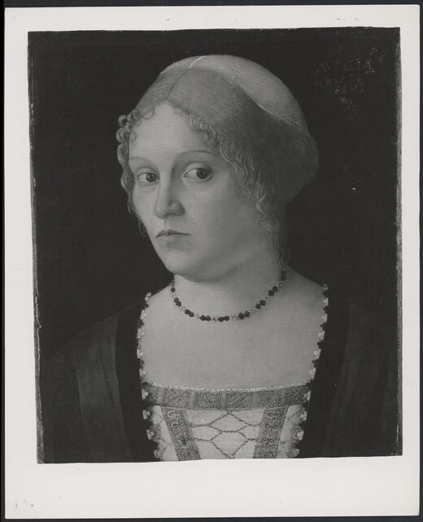
Venetian, c. 1505
~55works recorded at the Nelson-Atkins
on the photographs in the half of Berenson's archive catalogued so far. Many are still there; some have since moved on.
Ten years ago, finding them meant opening boxes, one folder at a time. Today it is one search.
Every photograph is scanned front and back; what is written on it becomes data; each museum is placed on a map.
Photographs from the Fototeca Berenson, Villa I Tatti, of works in the Nelson-Atkins Museum of Art today, with the museum's current attributions. Source: fototeca.itatti.net.
part III · data to discoverycaptioning
From a label on a folder to a description of every slide.
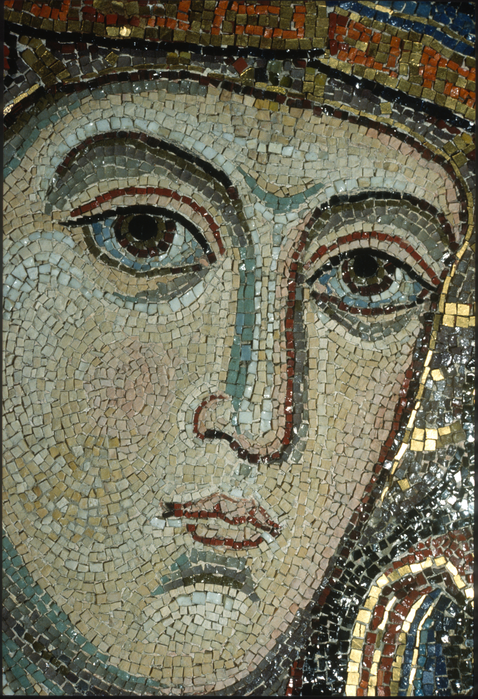
what we had · folder 26
Roma: S. Maria Maggiore – Mosaici XIII secolo – Cantiere Torriti e arco trionfale V secolo
AI captionClose view of a mosaic face, with the contours of the eyes, nose and mouth built from tesserae.
mosaic detailtesserae
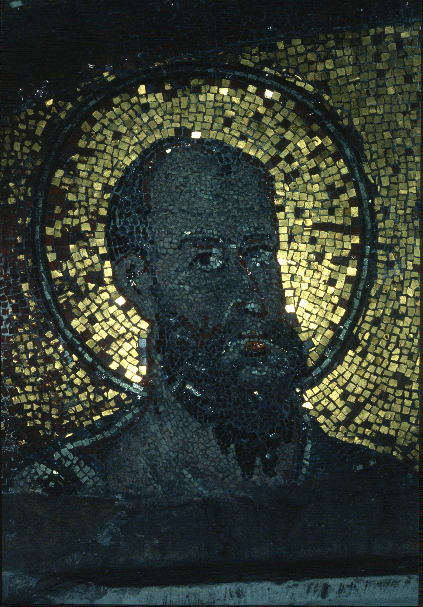
what we had · folder 34
Roma – S. Giovanni in Laterano: Cappella del Sancta Sanctorum – lato est: presbiterio mosaico “Il Salvatore entro clipeo sostenuto da quattro angeli”
AI captionA dark mosaic portrait of a bearded haloed man, surrounded by gold tesserae.
mosaic detailcomparison
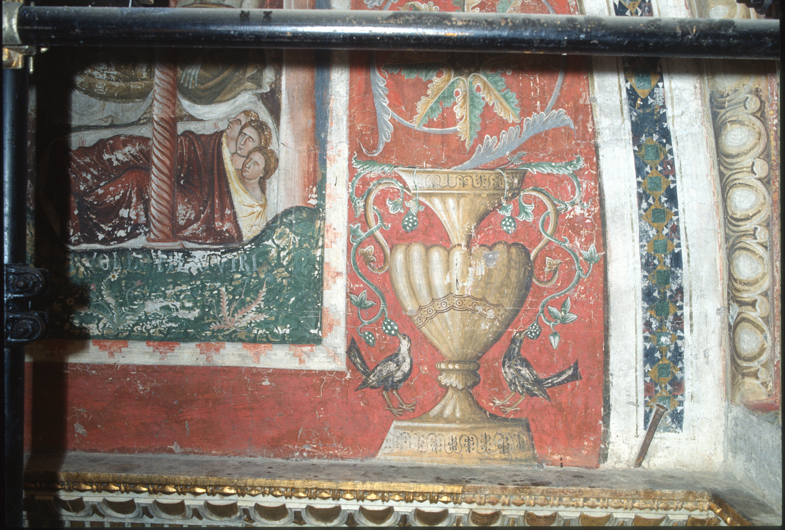
what we had · folder 36
Roma – S. Giovanni in Laterano: Cappella del Sancta Sanctorum – parete nord: “Il martirio di S. Agnese” e “il miracolo di S. Niccola”
AI captionA painted vase and scrolling foliage beside part of a narrative scene, partly crossed by scaffold tubing.
painting detailscaffold
36,631 slides arrived with only the handwritten label of their folder: nothing on the individual slides. Captions and categories are AI drafts awaiting curatorial review.
part III · data to discoverybruno zanardi
from boxes to a platform
Bruno Zanardi: the restorer's eye.
Four decades on the scaffolds of Italy's great monuments: the Upper Church at Assisi, Parma, the Sancta Sanctorum, Trajan's Column, the Ara Pacis.
Their photographs, books, diaries and letters sit in different rooms, catalogued by different people at different times. We are putting them back together, in four strands.
1
What they collected
Berenson's photo archive, read front and back.
Fototeca Berenson
2
What they studied
His famous Lists of who painted what, and where.
Italian Pictures of the Renaissance
3
Where they went
Mary's diaries, and three travel books, as maps.
The Geography of Taste · three atlases
4
Whom they knew
Letters from New York to Tokyo.
Belle da Costa Greene · Yukio Yashiro
part III · data to discoveryitalian pictures
2 · what they studied
Berenson's Lists, from heavy volumes to a living edition.
Every page searchable; each work Berenson listed linked to its record in museums around the world today.
J. P. Morgan's librarian from 1905, and from 1924 to 1948 the first director of the Morgan Library: one of the most powerful women in the American art world. Her letters to Berenson, lively and sharp, over four decades; edited with staff of the Morgan Library & Museum.
4,131 letter pages1,008 people
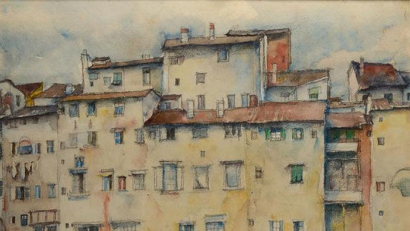
Yukio Yashiro
He studied with Berenson in Florence, wrote a landmark book on Botticelli, and became a leading figure of Japanese art history. Their friendship, in letters from 1923 to 1959, spanned two cultures and a world war.
114 lettersmoving to our shared platform
part III · data to discoveryone object
Today, four records in four places. Tomorrow, one object with a history.
the Lists
Berenson's attribution, and the collection where he recorded the picture.
the photo archive
His pencilled notes on the back: an earlier attribution, a sale.
Mary's 1908 guide
The picture as worth a detour.
Mary's diary
The day they stood in front of it, and with whom.
One object, on a map and a timeline. Exactly what Metapolis was built to do: the Berensons' story is its richest test.
Which pictures did Mary recommend in 1908 that Bernard later reattributed?
Whom did the Berensons see in the weeks before a change of mind?
How did the paintings they studied move from Italian churches into American museums?
part III · data to discoverymusic · the global Renaissance
Beyond painting: music, and the global Renaissance.
A pilot digital library of Florence's Renaissance music manuscripts: 1,775 pieces, 7,500 page images. Open a song and listen to it. Out of the box, AI reads only about a third of the notes correctly, so we say so, and built a test to measure it.
Ivories carved in present-day Sierra Leone, the Kingdom of Benin (present-day Nigeria) and the Kongo for European patrons: the classic 1988 catalogue, out of print, now online. 501 objects, each mapped from where it was made to where it is held today.
part III · data to discoverymusic
Floreat Musica · preview
Florence's Renaissance music manuscripts, to read and to hear.
Much of what you have seen is not yet public. For two reasons we take seriously.
01Rights
Photographs from studios and museums, books still in copyright, images with their own licences: cleared case by case. Where we cannot show an image, we link to its owner.
02Verification
Every project is reviewed and tested at length, so that the data and the connections are correct. Much of that time goes into the source material itself: images scanned at the wrong rotation, page numbers that slip out of line.
Everything we build is free to use and open to reuse. A scholar in Padua, a student in Tokyo and a curator in Kansas City all start from the same place.
01Open sources
Collections that only a few could visit, now available to anyone with a browser.
02Shared tools
Software that other projects use, so they don't have to start from nothing.
03New scholars
Fellows and interns who learn these methods with us and take them home.
04Lasting results
Data that keeps its value after a project, a grant, or a piece of software ends.
Mapping Connectionsthank you
Thank you.
Questions, about anything, including how it all works.
with special thanks
To Jonathan Kemper and the Kemper family, whose support of I Tatti's Digital Humanities Lab made much of this work possible.
Lukas KlicHead of Digital Humanities Research
Remo GrilloDigital Humanities Research Software Engineer
Gianmarco SpinaciDigital Humanities Research Software Engineer
→dh.itatti.harvard.edu
the lab and its projects
→itatti.harvard.edu
I Tatti, the Harvard University Center for Italian Renaissance Studies
digiTattithe Harvard digital humanities lab for early modern studies
 thentoday
thentoday
 VeNissveniss.net
Florentia Illustrataflorentiaillustrata.net
VeNissveniss.net
Florentia Illustrataflorentiaillustrata.net